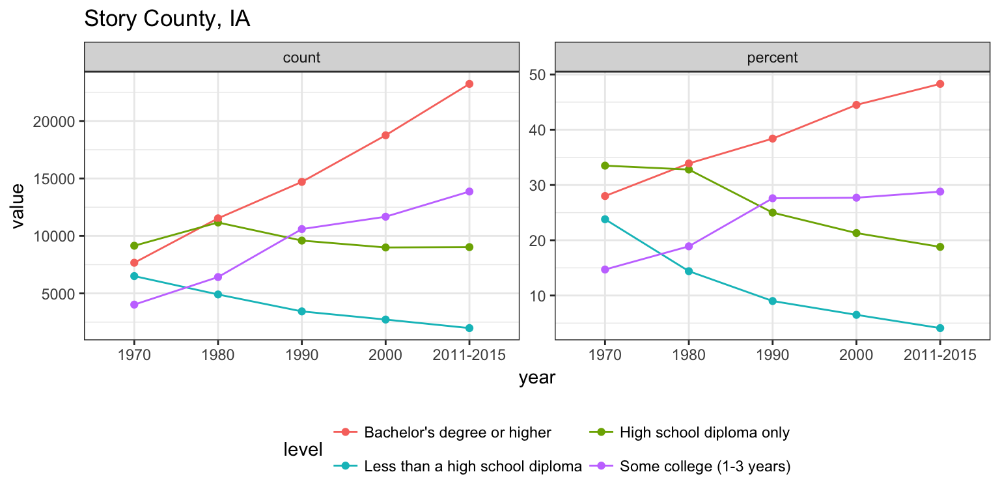
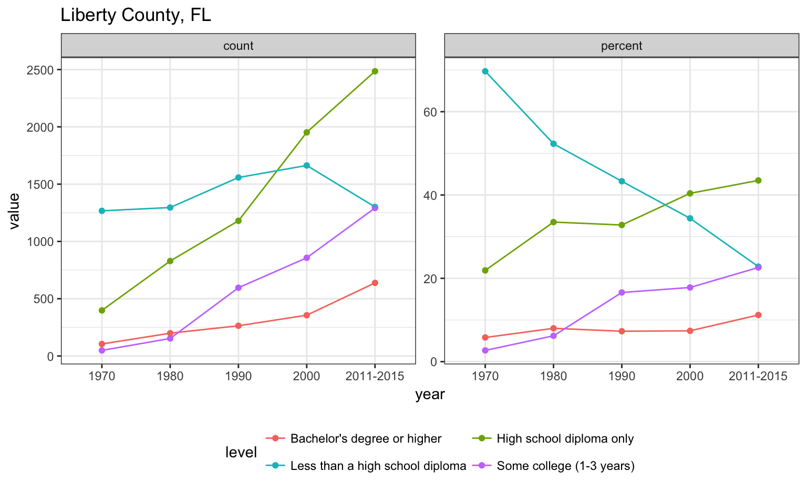
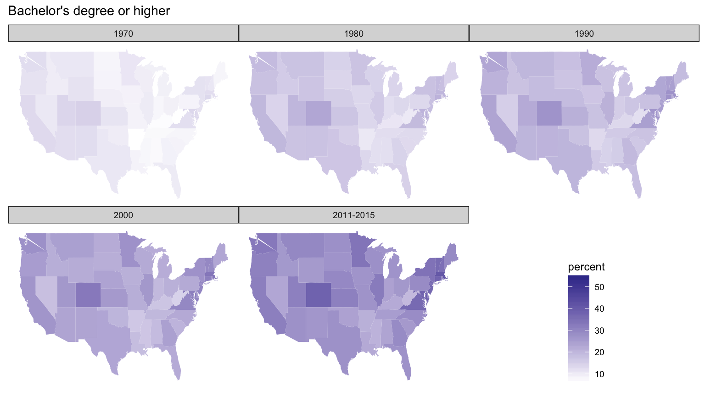
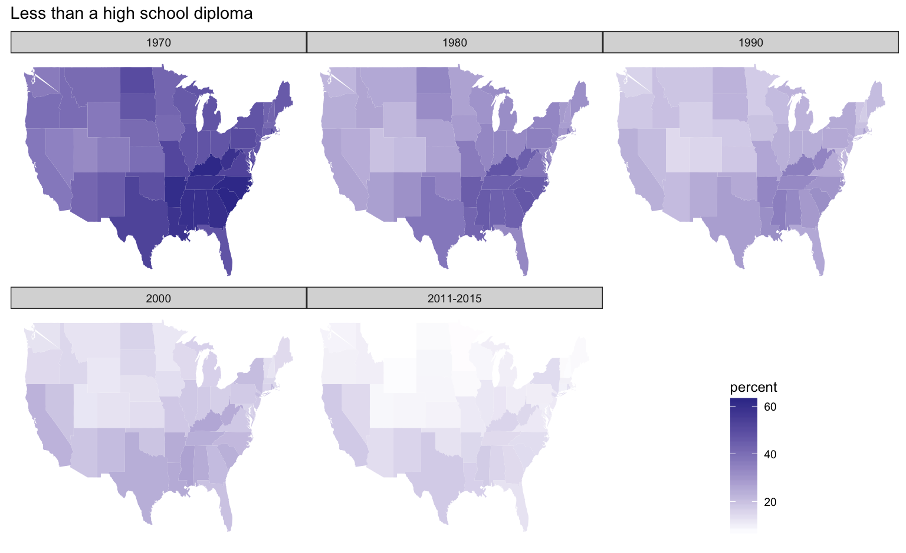
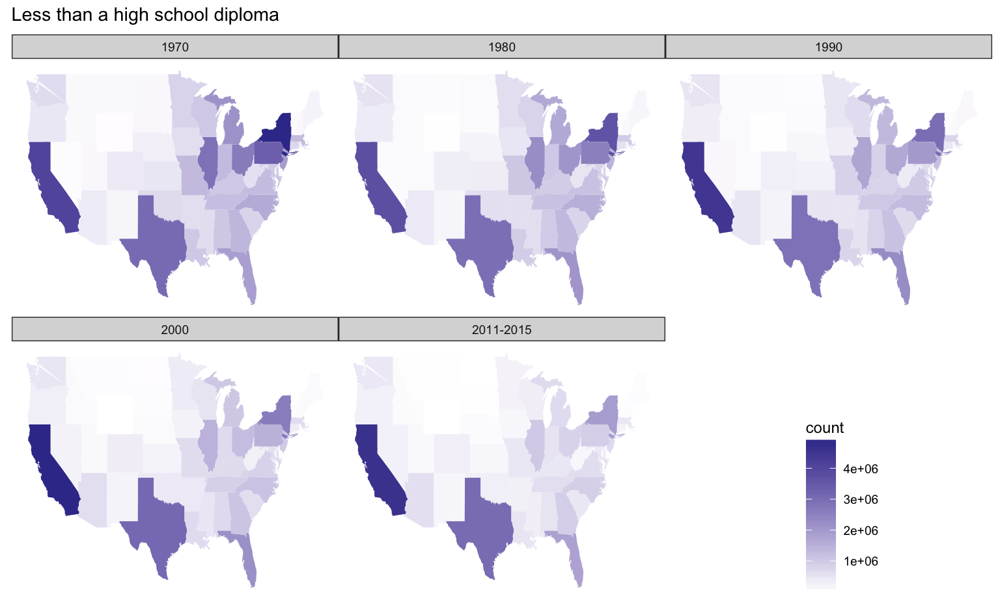
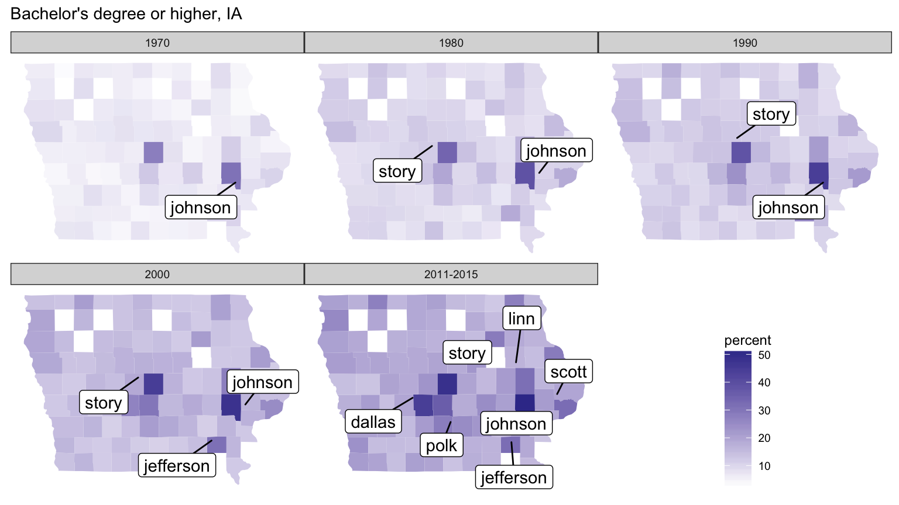
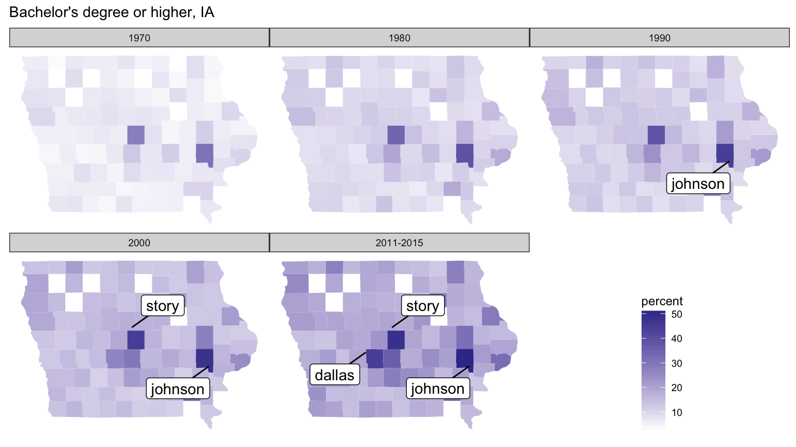

Xiangzhen Li, Xiangmei Zhang
Xiangmei Zhang & Xiangzhen Li
dat <- readxl::read_excel("../Education.xls", skip = 4)
head(dat)[1,]## # A tibble: 1 × 47
## `FIPS Code` State `Area name` `2003 Rural-urban Continuum Code`
## <chr> <chr> <chr> <dbl>
## 1 00000 US United States NA
## # ... with 43 more variables: `2003 Urban Influence Code` <dbl>, `2013
## # Rural-urban Continuum Code` <dbl>, `2013 Urban Influence Code` <dbl>,
## # `Less than a high school diploma, 1970` <dbl>, `High school diploma
## # only, 1970` <dbl>, `Some college (1-3 years), 1970` <dbl>, `Four years
## # of college or higher, 1970` <dbl>, `Percent of adults with less than a
## # high school diploma, 1970` <dbl>, `Percent of adults with a high
## # school diploma only, 1970` <dbl>, `Percent of adults completing some
## # college (1-3 years), 1970` <dbl>, `Percent of adults completing four
## # years of college or higher, 1970` <dbl>, `Less than a high school
## # diploma, 1980` <dbl>, `High school diploma only, 1980` <dbl>, `Some
## # college (1-3 years), 1980` <dbl>, `Four years of college or higher,
## # 1980` <dbl>, `Percent of adults with less than a high school diploma,
## # 1980` <dbl>, `Percent of adults with a high school diploma only,
## # 1980` <dbl>, `Percent of adults completing some college (1-3 years),
## # 1980` <dbl>, `Percent of adults completing four years of college or
## # higher, 1980` <dbl>, `Less than a high school diploma, 1990` <dbl>,
## # `High school diploma only, 1990` <dbl>, `Some college or associate's
## # degree, 1990` <dbl>, `Bachelor's degree or higher, 1990` <dbl>,
## # `Percent of adults with less than a high school diploma, 1990` <dbl>,
## # `Percent of adults with a high school diploma only, 1990` <dbl>,
## # `Percent of adults completing some college or associate's degree,
## # 1990` <dbl>, `Percent of adults with a bachelor's degree or higher,
## # 1990` <dbl>, `Less than a high school diploma, 2000` <dbl>, `High
## # school diploma only, 2000` <dbl>, `Some college or associate's degree,
## # 2000` <dbl>, `Bachelor's degree or higher, 2000` <dbl>, `Percent of
## # adults with less than a high school diploma, 2000` <dbl>, `Percent of
## # adults with a high school diploma only, 2000` <dbl>, `Percent of
## # adults completing some college or associate's degree, 2000` <dbl>,
## # `Percent of adults with a bachelor's degree or higher, 2000` <dbl>,
## # `Less than a high school diploma, 2011-2015` <dbl>, `High school
## # diploma only, 2011-2015` <dbl>, `Some college or associate's degree,
## # 2011-2015` <dbl>, `Bachelor's degree or higher, 2011-2015` <dbl>,
## # `Percent of adults with less than a high school diploma,
## # 2011-2015` <dbl>, `Percent of adults with a high school diploma only,
## # 2011-2015` <dbl>, `Percent of adults completing some college or
## # associate's degree, 2011-2015` <dbl>, `Percent of adults with a
## # bachelor's degree or higher, 2011-2015` <dbl>library(Edulevel)
head(tidy)## # A tibble: 6 × 7
## FIPS State Area level year type
## <dbl> <chr> <chr> <chr> <chr> <chr>
## 1 0 US United States Less than a high school diploma 1970 count
## 2 1000 AL Alabama Less than a high school diploma 1970 count
## 3 1001 AL Autauga County Less than a high school diploma 1970 count
## 4 1003 AL Baldwin County Less than a high school diploma 1970 count
## 5 1005 AL Barbour County Less than a high school diploma 1970 count
## 6 1007 AL Bibb County Less than a high school diploma 1970 count
## # ... with 1 more variables: value <dbl>EdulevelEdulevelshowcounty : Show list of counties of a given state. County names will be used in other functions.
library(ggplot2)
library(tidyverse)
library(rvest)
showcounty("IA")## [1] "Adair County" "Adams County" "Allamakee County"
## [4] "Appanoose County" "Audubon County" "Benton County"
## [7] "Black Hawk County" "Boone County" "Bremer County"
## [10] "Buchanan County" "Buena Vista County" "Butler County"
## [13] "Calhoun County" "Carroll County" "Cass County"
## [16] "Cedar County" "Cerro Gordo County" "Cherokee County"
## [19] "Chickasaw County" "Clarke County" "Clay County"
## [22] "Clayton County" "Clinton County" "Crawford County"
## [25] "Dallas County" "Davis County" "Decatur County"
## [28] "Delaware County" "Des Moines County" "Dickinson County"
## [31] "Dubuque County" "Emmet County" "Fayette County"
## [34] "Floyd County" "Franklin County" "Fremont County"
## [37] "Greene County" "Grundy County" "Guthrie County"
## [40] "Hamilton County" "Hancock County" "Hardin County"
## [43] "Harrison County" "Henry County" "Howard County"
## [46] "Humboldt County" "Ida County" "Iowa County"
## [49] "Jackson County" "Jasper County" "Jefferson County"
## [52] "Johnson County" "Jones County" "Keokuk County"
## [55] "Kossuth County" "Lee County" "Linn County"
## [58] "Louisa County" "Lucas County" "Lyon County"
## [61] "Madison County" "Mahaska County" "Marion County"
## [64] "Marshall County" "Mills County" "Mitchell County"
## [67] "Monona County" "Monroe County" "Montgomery County"
## [70] "Muscatine County" "O'Brien County" "Osceola County"
## [73] "Page County" "Palo Alto County" "Plymouth County"
## [76] "Pocahontas County" "Polk County" "Pottawattamie County"
## [79] "Poweshiek County" "Ringgold County" "Sac County"
## [82] "Scott County" "Shelby County" "Sioux County"
## [85] "Story County" "Tama County" "Taylor County"
## [88] "Union County" "Van Buren County" "Wapello County"
## [91] "Warren County" "Washington County" "Wayne County"
## [94] "Webster County" "Winnebago County" "Winneshiek County"
## [97] "Woodbury County" "Worth County" "Wright County"EdulevellineEd : Plot the education level of a given county.
#Story county in Iowa
lineEd("IA", "Story County")
EdulevelThe education levels is different from county to county.
#Liberty county in Florida
lineEd("FL", "Liberty County")
Edulevelmapstate :Map the education level of all states.
#Education level: 4="Bachelor's degree or higher".
mapstate(vtype = "percent", levelint = 4)
Edulevel#Education level: 1="Less than a high school diploma"
mapstate(vtype = "percent", levelint = 1)
Edulevel“percent” is better than “count” in here.
#Education level: 1="Less than a high school diploma"
mapstate(vtype = "count", levelint = 1)
Edulevelmapcounty Map the education level of a given state.
#limit: Label county names whose percentage > limit.
mapcounty(vtype = "percent", levelint = 4,stateshort="IA", limit=30)
Edulevelmapcounty Map the education level of a given state.
#Change limit to 40
mapcounty(vtype = "percent", levelint = 4,stateshort="IA", limit=40)